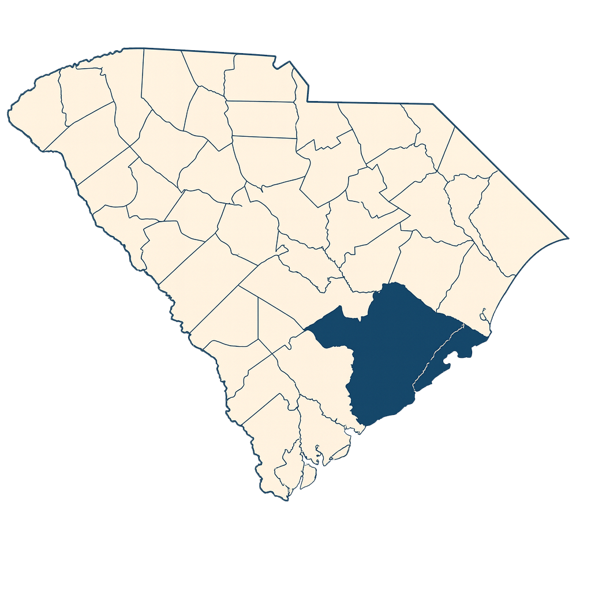

← Selections
QuickChoice
Get a Free Machine
Coverage
Charleston Tri-County • NYC Metro
Service Area Maps
South Carolina
Charleston Tri-County

New York
NYC Metro
Proudly Serving These Communities
Charleston, SC — Tri-County area
New York, NY — Metropolitan area
Contact us - See if we service your area